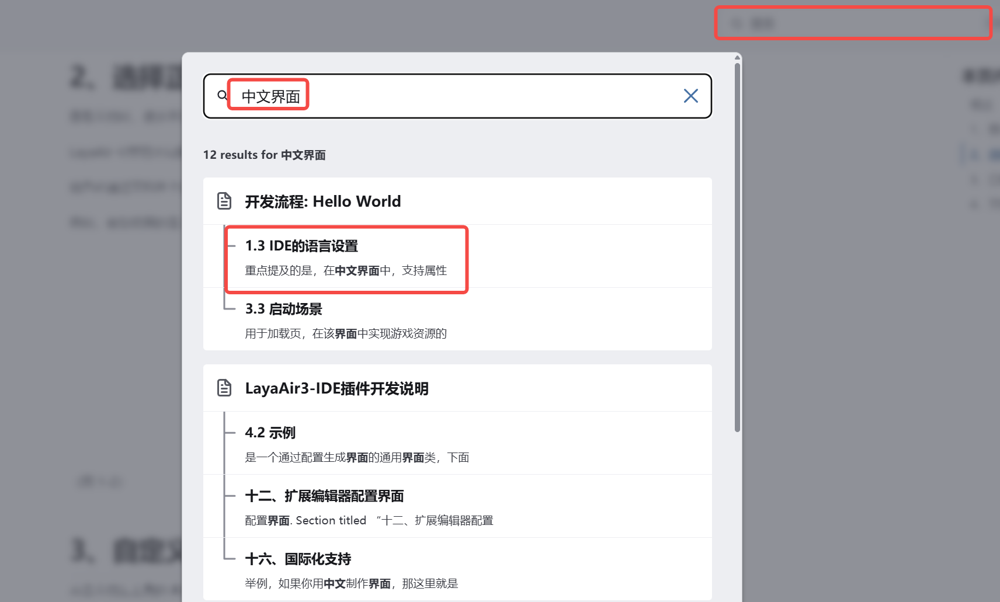
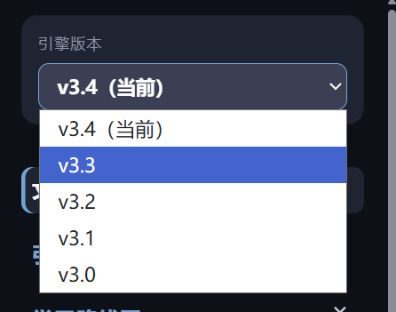
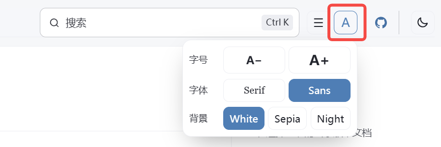

文档使用说明（必读）
欢迎阅读 LayaAir3 引擎文档
在这里，您可以了解 LayaAir3 引擎 与 LayaAir3-IDE 的各项功能与使用方法。
1、善用搜索功能
尽管我们尽力让文档目录结构清晰易查，
但如果您只是想在遇到问题时快速找到答案，搜索功能 是最高效的方式。
例如，若您希望让 IDE 界面显示中文，可在搜索栏中输入 “中文界面”，然后按下 Enter 键，即可获得相关结果。 如图 1-1所示：

（图 1-1）
点击搜索结果中的 文档标题 可查看详细内容。
2、选择正确的引擎版本文档
查看文档时，很多开发者会忽略 引擎版本 这一点。
LayaAir 引擎的不同版本（如 3.1、3.2、3.3……）会新增或修改一些功能，可能会导致使用方式不同。
请务必通过文档左上角的 版本号下拉菜单，选择与您当前使用版本一致的分支。
例如，若您使用的是 3.3.2 版本，应选择 3.3 分支 文档进行查看。 如图1-2所示：

（图 1-2）
3、自定义文档显示风格
点击文档左上角的 A 图标，即可打开 显示设置面板，在其中可调整：
- 字体大小
- 字体样式
- 背景主题
您可以根据喜好设置最舒适的阅读样式。如图1-3所示：

（图 1-3）
4、文档反馈与修改
LayaAir 文档是开源的，开发者可以：
- 本地克隆 文档查看或编辑；
- 提交修改或新增文档；
- 通过客服反馈问题。
📘 中文文档仓库：https://github.com/layabox/LayaAir-Doc-ZH
📘 英文文档仓库：https://github.com/layabox/LayaAir-Doc-EN
文档仓库中的不同分支与 引擎版本号 逐一对应。
如果您不熟悉 GitHub 的提交流程，也可直接联系官方客服反馈问题，我们会尽快进行修改。
💬 客服微信：LayaAir_Engine

（扫一扫添加官方客服微信）